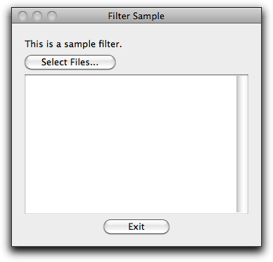
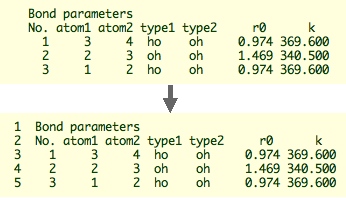

化学の研究では、テキストファイルに簡単な処理を加えたいことがときどきあります。Ruby はこの目的に特に適しています。Ruby を簡単に使えるようにするため、Molby は "filter kit" という特別な機能を持っています（バージョン 0.6.4 以降）。Filter という名前は "UNIX" の文化から来ており、テキストを処理する小さなプログラムのことを指します。
以下にフィルタスクリプトの作り方を解説します。説明のため、ごく単純な機能を持ったものを作ります。ファイルの各行に行番号をつけるものです。
 
フィルタを書くためには、新しいテキストファイルを作って、拡張子を ".rb" か ".mrb" とします。前者が Ruby スクリプトとして一般的なものですが、後者は Molby 専用のスクリプトを示すために使うことができます。
まず次の行から始めます。
Dialog.filter_kit("Filter Sample", "This is a sample filter.") { |args|
Dialog.filter_kit というメソッドは２つの引数をとります。ウィンドウのタイトルと、メッセージです。この他にブロックが必要で、その中にメインプログラムを置きます。
フィルタのユーザーが "Select Files" ボタンでファイルを選ぶと（複数のファイルを選択できます）、ブロックが実行され、選択されたファイル名の配列 (Array) が引数として渡されます。ブロックの本体は次のように書きます。
1 Dialog.filter_kit("Filter Sample", "This is a sample filter.") { |args| 2 args.each { |fname| 3 fp = open(fname, "r") 4 if fp == nil 5 error_message_box("Cannot open file: #{arg}") 6 next 7 end 8 puts fname 9 a = fp.readlines 10 fp.close 11 File.rename(fname, fname + "~") 12 fp2 = open(fname, "w") 13 a.each_with_index { |ln, n| 14 ln = (n + 1).to_s + " " + ln 15 fp2.print ln 16 } 17 fp2.close 18 }
{}) 内のコードを各ファイルに対して繰り返します。ln and n としてブロックに渡されます。(n + 1) が行番号になります（インデックスは０から始まるため）。to_s は整数を文字列に変換します。上のテキストを "filter_sample.rb" として保存します（拡張子が正しければ、ファイル名は何でも構いません）。このファイルを Molby で開けば、フィルタとして使うことができます。